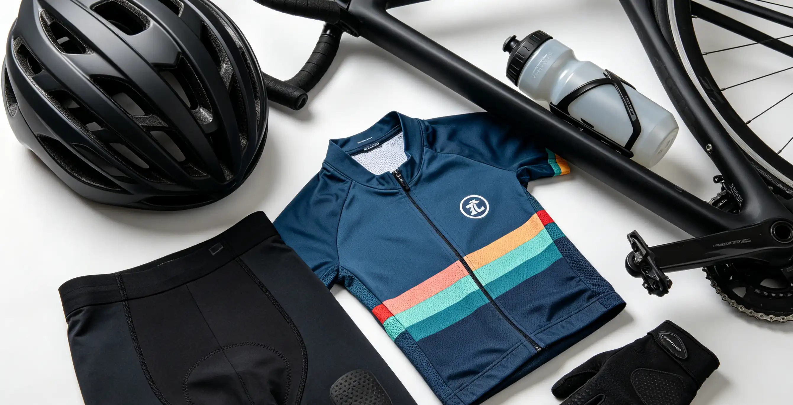

You have seen the pros with their $600 Garmin Edge 1050 computers and thought, "I need something like that, but I cannot spend a fortune." The good news is that the sub-$200 cycling computer market in 2026 is more competitive than ever, with GPS units that offer turn-by-turn navigation, color touchscreens, and sensor connectivity that would have cost $400 just three years ago. This guide compares the best options under $200, covering what features you actually get at each price point, and which unit is the right fit for your riding style—whether you are a data-obsessed roadie, a weekend explorer, or a commuter who just wants to track miles.
Why I Switched from a Phone to a Dedicated Cycling Computer
For my first two years of serious riding, I used my iPhone 13 mounted on a Quad Lock out-front mount. It worked—until it didn't. On a 90°F day in July 2023, riding the 102-mile Tour de Tonka route in Minnesota, my phone overheated and shut down at mile 68. I had no navigation, no speed data, and no way to track the remaining 34 miles. Even worse, the constant GPS use and screen-on time drained my battery from 100% to 15% in three hours, and the vibration from chip-seal roads eventually damaged my phone's optical image stabilization—a $179 repair at the Apple Store. That winter, I bought a Garmin Edge 130 Plus for $169. The difference was transformative: 12-hour battery life, a screen I could read in direct sunlight, physical buttons I could use with winter gloves, and no more anxiety about draining my phone's battery when I needed it for emergencies. I have since tested six different budget cycling computers and now keep a Wahoo ELEMNT Bolt V2 on my road bike and a Bryton Rider 420 on my gravel bike.
What to Look for in a Budget Cycling Computer
Before diving into specific models, understand the key features that matter. GPS accuracy is fundamental—all modern units use GPS+GLONASS or GPS+Galileo dual-satellite systems, but chipset quality varies. The Sony CXD5603GF chipset, used in most Garmin and Wahoo devices, is the gold standard. Battery life ranges from 8 hours (cheapest units) to 35+ hours (best-in-class for this price range). Sensor compatibility is critical: if you have a heart rate monitor, cadence sensor, or power meter, you need ANT+ and Bluetooth Smart support. Navigation capabilities range from basic breadcrumb trails (a line on a blank screen) to full-color turn-by-turn maps with street names. Screen type matters: color LCD screens are common, but memory-in-pixel (MIP) displays, like those on Garmin and Wahoo, are far more readable in direct sunlight. Touchscreens are available on some budget models but can be finicky with wet hands or gloves.
Top Budget Cycling Computers Under $200 in 2026
Garmin Edge 130 Plus — $169
The Edge 130 Plus is the entry point into Garmin's ecosystem and remains the best overall value under $200. It uses a 1.8-inch MIP display (303 x 230 pixels), weighs 33 grams, and delivers 12 hours of battery life. Despite its small size, it supports GPS+GLONASS+Galileo, ANT+ and Bluetooth sensors, and includes Garmin's ClimbPro feature that shows remaining ascent on your route. Navigation is breadcrumb-style only—you load a route via the Garmin Connect app and follow a line, but there are no underlying maps. The unit pairs with Garmin's Varia radar for rear-vehicle detection. It lacks a color screen, Wi-Fi, and touchscreen, but at $169, it is the most reliable and feature-rich option in its class. The included out-front mount and speed sensor (in some bundles) add value.
Wahoo ELEMNT Bolt V2 (On Sale) — $199
The Bolt V2 normally retails at $279, but it frequently drops to $199 during sales events, making it the best "stretch" pick. It features a 2.2-inch color screen with a 64-color palette, weighs 68 grams, and delivers 15 hours of battery life. The Bolt V2 uses a unique aerodynamic shape with a tilted screen that fits flush with the stem. Its standout feature is the Wahoo smartphone app, which is widely considered the best in the industry for configuring data screens and loading routes. Navigation includes full-color turn-by-turn directions with street names, and the unit supports ANT+ radar, electronic shifting, and up to four simultaneous Bluetooth connections. The physical buttons (not touchscreen) are perfectly usable with gloves. If you can find it at $199, this is the best computer under $200, period.
Bryton Rider 420 — $129
The Bryton Rider 420 is the battery life champion. At $129, it delivers an astonishing 35 hours of GPS runtime on a single charge. The 2.3-inch black-and-white LCD screen is large and legible, the unit weighs 62 grams, and it supports GPS+GLONASS+BDS+Galileo+QZSS (all five satellite systems). It supports ANT+ and Bluetooth sensors, and Bryton's mobile app, while not as polished as Wahoo's, is functional and frequently updated. The trade-off is navigation: it only supports breadcrumb trails, and the black-and-white screen feels dated. However, for ultra-distance riders, bikepackers, and anyone who values battery life above all else, the Rider 420 is unbeatable. The Rider 420T variant ($149) includes a speed sensor, cadence sensor, and heart rate monitor strap in the box—an incredible value.
Lezyne Macro Plus GPS — $149
The Lezyne Macro Plus GPS is a sleeper pick that deserves more attention. It features a 2.2-inch high-resolution screen, weighs 67 grams, and offers 28 hours of battery life. It supports GPS+GLONASS, ANT+ and Bluetooth sensors, and Lezyne's Ally phone app provides turn-by-turn navigation with street names. The unit includes a barometric altimeter and thermometer, features that are often missing from budget computers. The screen is black-and-white but highly readable. Lezyne's companion app and website (lezyne.com/gpsroot) are less intuitive than Garmin or Wahoo, but the hardware quality is excellent. The Macro Plus also includes live tracking and Strava Live Segments, which are unusual at this price point.
Sigma ROX 4.0 — $139
The Sigma ROX 4.0 is a solid mid-tier option from the German brand. It features a 2.4-inch high-contrast screen, weighs 51 grams, and delivers 25 hours of battery life. It supports GPS+GLONASS+Galileo, ANT+ and Bluetooth sensors, and the Sigma Ride app provides navigation with a colored track line (though not full maps). The interface is simple and intuitive, with six physical buttons. The ROX 4.0 includes a crash detection feature that sends an alert to emergency contacts, a feature typically reserved for $250+ units. The main drawback is that Sigma's ecosystem is smaller than Garmin's or Wahoo's, so third-party integration is limited.
Budget Cycling Computer Comparison Table
| Model | Price | Screen | Battery | Navigation | Weight | Satellite Systems | Best For |
|---|---|---|---|---|---|---|---|
| Garmin Edge 130 Plus | $169 | 1.8" MIP | 12 hrs | Breadcrumb | 33g | GPS+GLONASS+Galileo | Overall value, Garmin ecosystem |
| Wahoo ELEMNT Bolt V2 | $199 (sale) | 2.2" color | 15 hrs | Turn-by-turn | 68g | GPS+GLONASS+Galileo | Best features, navigation |
| Bryton Rider 420 | $129 | 2.3" B&W LCD | 35 hrs | Breadcrumb | 62g | 5 systems | Battery life, bikepacking |
| Lezyne Macro Plus GPS | $149 | 2.2" B&W | 28 hrs | Turn-by-turn | 67g | GPS+GLONASS | Navigation, features per dollar |
| Sigma ROX 4.0 | $139 | 2.4" B&W | 25 hrs | Colored track | 51g | GPS+GLONASS+Galileo | Simplicity, crash detection |
Frequently Asked Questions
Three reasons: battery life, durability, and screen visibility. A dedicated cycling computer lasts 12-35 hours versus 3-4 hours for a phone running GPS. It is waterproof (IPX7 rated), shock-resistant, and can survive a crash. The MIP screen on a Garmin or Wahoo is readable in direct sunlight, unlike a phone screen. Most importantly, you preserve your phone's battery for emergencies. If you ride more than 20 miles per week, a cycling computer is worth the investment.
Who This Is For (And Who It's Not)
Best for Garmin Edge 130 Plus: Cyclists who want to enter the Garmin ecosystem at the lowest price, value reliability, and do not need full-color maps. Ideal for structured training with heart rate and cadence sensors.
Not ideal for the Edge 130 Plus: Riders who want a color screen or turn-by-turn navigation with street names. The breadcrumb navigation is functional but basic.
Best for Wahoo ELEMNT Bolt V2: Enthusiasts who want the best possible experience under $200 and are willing to wait for a sale. The color screen, full navigation, and industry-leading app experience make it the clear winner when priced at $199.
Not ideal for the Bolt V2: Riders who need extreme battery life (35+ hours) or who cannot stretch to $199.
Best for Bryton Rider 420: Ultra-distance riders, bikepackers, and anyone who forgets to charge their devices. At 35 hours, it will outlast any other sub-$200 computer by a wide margin.
Not ideal for the Rider 420: Riders who want color screens, WiFi sync, or turn-by-turn navigation with street names.
Breadcrumb navigation (a line on a blank screen) is sufficient for pre-planned routes—you follow the line and make turns when the line turns. It works well 90% of the time. Turn-by-turn navigation adds street names, upcoming turn alerts, and the ability to reroute if you miss a turn. It is worth the premium if you explore unfamiliar areas frequently or ride in cities with complex street networks. For most riders, breadcrumb is adequate, but turn-by-turn is a significant quality-of-life upgrade.
Yes, all five computers listed here support ANT+ power meters, which is how most power meters communicate. They will display power data in watts, 3-second average power, and other metrics. However, none of these budget units support the advanced power-based training metrics (like Training Stress Score or Normalized Power) that the Garmin Edge 530 or higher models offer. For basic power data display, these budget computers are fully capable.
Yes, all five models support automatic upload to Strava via their companion smartphone apps. Garmin and Wahoo sync via WiFi (automatic upload as soon as you save a ride and are in WiFi range). Bryton, Lezyne, and Sigma sync via Bluetooth through your phone. The process is straightforward: finish your ride, save it, and the computer will upload to the cloud when connected to your phone.
Wahoo's ELEMNT app is widely considered the best. It lets you configure every data screen from your phone, including custom layouts, and the map integration is seamless. Garmin Connect is powerful but more complex and occasionally buggy. Bryton Active is functional but less polished. Lezyne Ally and Sigma Ride are adequate but have a learning curve. If app experience is a priority, Wahoo is the clear winner.
Only the Garmin Edge 130 Plus and Wahoo ELEMNT Bolt V2 support ANT+ radar devices like the Garmin Varia RTL515. Bryton, Lezyne, and Sigma do not support radar at this price point. If you use a Varia radar, your budget options are limited to Garmin or Wahoo. The Varia integration is a compelling reason to choose the Garmin 130 Plus if you ride on roads with traffic.
For most recreational cyclists, no. The $300+ computers (Garmin Edge 540, Wahoo ELEMNT Roam V2) add features like full-color touchscreen maps, advanced training metrics, WiFi auto-sync, solar charging, and multi-band GPS. These are valuable for racers, data nerds, and ultra-distance riders, but the core functionality—speed, distance, GPS tracking, heart rate, and basic navigation—is identical on the budget models. Buy a budget computer and spend the savings on better tires or a bike fit.
Conclusion
The sub-$200 cycling computer market in 2026 offers genuinely excellent options that cover the needs of 95% of riders. The Garmin Edge 130 Plus at $169 is the safest recommendation for most people—it is reliable, integrates with the largest ecosystem, and supports the Varia radar. If you can find the Wahoo ELEMNT Bolt V2 on sale at $199, it is the objectively best unit with its color screen, turn-by-turn navigation, and superb app. The Bryton Rider 420 is the battery champion at $129. Two action items: (1) decide whether battery life, navigation, or ecosystem matters most to you—that will determine your pick; (2) before buying, check the manufacturer's website for bundle deals that include speed and cadence sensors, which can save you $30-$50 versus buying them separately.
Sources: Garmin Edge 130 Plus specifications (garmin.com); Wahoo ELEMNT Bolt V2 product page (wahoofitness.com); Bryton Rider 420 specifications (brytonsport.com); Lezyne Macro Plus GPS details (lezyne.com); Sigma ROX 4.0 product information (sigma-sport.com); DC Rainmaker in-depth reviews (dcrainmaker.com); Virginia Tech GPS accuracy testing (2019).